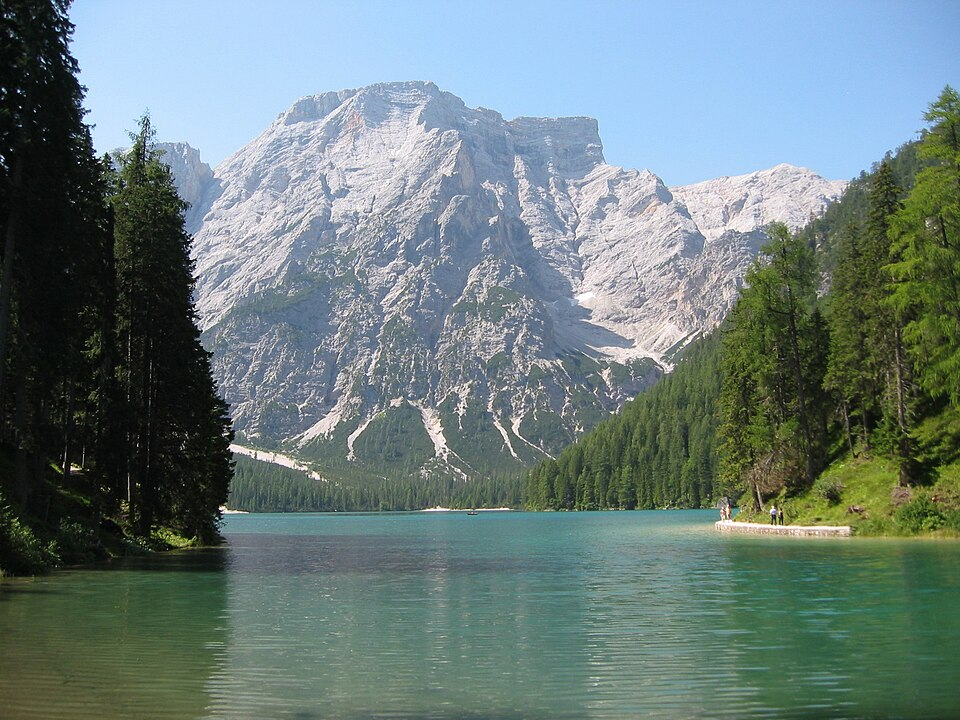

Main plan · Alta Via 1 north · group of 9
Lago di Braies → Cinque Torri
Trip 9–17 Aug 2027 · hike 12–15 Aug · 4 days · 3 hut nights
- ≈39.1 kmdistance
- +2,728 mtotal climb
- 2,486 mhigh point · Forcella del Lago
- ≈16–19 hwalking · guide totals
Photo: STirol · CC BY-SA 3.0 · Wikimedia Commons
Countdown
20 Aug2027 · start at Lago di Braies
Start:
The route
Each day's distance and climb profile is on the day cards.
Bookings (group tracker)
of bookings done
- Booked
- Pending
- Not booked
Booking progress comes from the Group tab's booking tracker. See the hut booking status.
Hut nights
Each night's hut and booking pill: see hut booking status.
Weather
Live forecasts need signal. Check them at the hut the night before.
South Tyrol forecast Veneto Dolomites forecastEmergency: 112 (EU emergency number, works without a SIM). Carry the GPX on your phone too. Check the online page for changes before you go.
MAIN PLAN: Alta Via 1 (north), Lago di Braies → Cinque Torri, 4 days hut to hut, 12–15 Aug 2027 (trip 9–17 Aug)
Group of 9, all named (the Group tab lists all 9), beds asked for 9 · Plan prepared 2 Nov 2026; dates and huts changed 3 Nov 2026 and again 4 Nov 2026 (plan for 9 adults: fly Mon 9 Aug, Braies Tue 10–Wed 11, hike Thu 12–Sun 15 Aug 2027, night 2 at Ücia Lavarella instead of Fanes, Ortisei Sun 15–Mon 16, home Tue 17) · Only the Lavarella reservation request has been submitted (pending); nothing else is booked, held or paid.
This is the main hike. Alta Via 1 north, 3 hut nights (Biella, Ücia Lavarella, Col Gallina), finishing at Cinque Torri on Sun 15 Aug (Ferragosto) with no night at Nuvolau, then 2 nights in Ortisei (Seceda) and home from Venice on Tue 17 Aug. Lagazuoi is now optional, with no night: a Day 3 detour on foot or by cable car (§2.2). The Palaronda is the backup only (§8 and palaronda.html). Days 1–2 use the figures from Matthew's hut planner [S91]; Days 3–4 use hut and trail sources [S52][S55][S61][S101][S102].
Group size: 9 people (Matthew, 3 Nov 2026; the 9th, Dylan, named 3 Nov 2026). The Group tab roster, the cost ledger, beds and the group cost in §6 are all for 9.
Conventions: [Sn] = source (list at the end). EST = my estimate, with the method stated. TRACE (EST) = route traced on OpenStreetMap (AV1 relation 177743 for Days 1–2; OSM trails plus 512 m of the SP24 road near Passo Valparola for Days 3–4) with elevation from OpenTopoData EU‑DEM 25 m, sampled every 40 m, counting climbs/drops of 5 m or more. Prices are 2026 unless stated; 2027 prices are mostly not published. EUR→USD at 1.1216 (ECB, 2 Nov 2026) [S32]. Interactive map: av1.html (this guide is also its "Full guide" tab).
Availability note (Tue 3 Nov 2026, 18:53–18:58 ET, read-only) [S107]. For 9 adults on the new dates: Biella showed 38 free places on Thu 12 Aug (€855 HB; max 8 per reservation, so 2 bookings); Col Gallina showed 23 shared‑room beds plus private rooms on Sat 14 Aug (per-bed €120–160 HB); Hotel Trenker (Braies) fits 9 on Tue 10–Wed 11; Hotel Rodes (Ortisei) fits 9 on Sun 15–Mon 16. Sun 15 Aug is Ferragosto (Italian national holiday): crowds, lift queues, Sunday buses, holiday traffic (§3.3). Full table: §5.1 Hut booking status and the panel in
av1.html.
Plan update (Wed 4 Nov 2026, from Matthew) [S108]. Night 2 is Ücia Lavarella (a few minutes from Rif. Fanes), not Fanes: 4‑bed dorm + 5‑bed dorm with shower/WC, half board, €969; the reservation request is submitted and awaiting confirmation (pending). Biella rooms: Pelmo (6) + Cima Nove (3), HB. Col Gallina: Room 3 (5 beds × €130) + 4 beds in Room 5 (× €120), HB, €1,130 (booking screen [S110]; city tax €1.50 pp extra).
⚠️ Ferragosto, Sun 15 Aug: bus 52 from Cinque Torri runs only at 14:20 and 16:20 (2026 Sunday/holiday timetable [S78]); the last chairlift down is 17:00.
1. Trip at a glance
| Date (2027) | What | Night |
|---|---|---|
| Mon 9 Aug | Leave the US (overnight flight; e.g. a UA321-type IAD 17:15 → VCE ≈07:55 next day [S15]; flights not costed) | plane |
| Tue 10 Aug | Land VCE ≈08:00, collect the van → drive to Braies (≈193.9 km, ≈2 h 36 by car, approx., OSRM [S106]; §3.0) and rest | Braies hotel, night 1 of 2 (Hotel Trenker fits 9 [S107]; §3.2) |
| Wed 11 Aug | Rest day at Braies. Option (b): drive the van to Cortina (≈47 km, ≈47 min [S107]), park, bus 445 + 442 back (§4) | Braies hotel (§3.2) |
| Thu 12 Aug | Day 1 Lago di Braies → Rifugio Biella | Rif. Biella (hut night 1) |
| Fri 13 Aug | Day 2 Biella → Sennes → Pederü → Ücia Lavarella | Ücia Lavarella (hut night 2; request submitted, pending) |
| Sat 14 Aug | Day 3 Lavarella → Fanes → Forcella del Lago → Rif. Scotoni → Passo Valparola → Passo Falzarego → Rifugio Col Gallina (optional Lagazuoi detour or cable car) | Rif. Col Gallina (hut night 3) |
| Sun 15 Aug (Ferragosto) | Day 4 Col Gallina → Averau → Scoiattoli (Cinque Torri) → chairlift down → bus 52 to Cortina (Ferragosto: 14:20 or 16:20 only) → van → drive to Ortisei (≈65 km, ≈1 h 17 [S107]) | Ortisei (Hotel Rodes fits 9 [S107]; §3.3) |
| Mon 16 Aug | Seceda day via Col Raiser (lift price TBD). ⚠️ The Col Raiser lift is in Santa Cristina, not Ortisei: bus 350 or taxi from Ortisei [S109] | Ortisei |
| Tue 17 Aug | Drive Ortisei → VCE (≈202 km, ≈3 h 05 [S107]), return the van, fly home | — |
Three hut nights: Biella, Ücia Lavarella (pending), Col Gallina. No night at Lagazuoi or Nuvolau: both are optional viewpoints (§2.2).
2. The hike, day by day
Main plan split: Braies → Biella → Ücia Lavarella → Col Gallina → Cinque Torri (night 2 moved from Fanes to Lavarella on 4 Nov 2026 [S108]; the two huts are a few minutes apart). Many guides put night 1 at Sennes instead of Biella (e.g. dolomites-guide.com [S37], Alpenventures [S38]); Biella is 3 km earlier on the same trail, which makes Day 1 short (good on arrival day +1) and Day 2 longer. Night 3 moved from Lagazuoi (not bookable online for August 2027 [S104]) to Col Gallina, just below Passo Falzarego. That makes Day 3 longer in distance but lower, and Day 4 short.
2.1 Summary table
Planning figures: Days 1–2 come from Matthew's hut planner [S91]. Day 3 adds up published legs: Fanes → Scotoni [S52], Scotoni → Valparola [S52][S101], Valparola → Falzarego [S61], and the trace for the last 0.8 km to Col Gallina. Day 4 comes from [S55]. Other guides and my OSM/EU‑DEM trace are shown for comparison; differences are explained below the table.
| Day | From → to | Distance | Ascent / descent | Walking time | Hut (night) |
|---|---|---|---|---|---|
| 1 · Thu 12 | Lago di Braies → Rif. Biella 2,327 m | 5.0 km [S91] | +891 / −57 m [S91] | 3.7–4.7 h [S91] | Biella (42 beds per planner [S91]; 47 per the hut [S50]) |
| 2 · Fri 13 | Biella → Sennes → Pederü → Ücia Lavarella ≈2,050 m | 12.9 km to Fanes [S91]; trace to Lavarella 13.3 km | +546 / −814 m [S91] (to Fanes) | 5.1–6.1 h [S91] | Ücia Lavarella (≈50 beds [S62]); request submitted, pending |
| 3 · Sat 14 | Lavarella → Fanes → Passo Limo → Forcella del Lago 2,486 m → Rif. Scotoni → Passo Valparola → Passo Falzarego → Rif. Col Gallina ≈2,060 m | ≈16.9 km (≈0.5 Lavarella → Fanes trace + 9.8 + 3.3 + 2.47 [S52][S61] + 0.82 trace, EST) | +979 / −955 m (+560 +360 +59; −640 −170 [S52][S61]; ≈−145 m Valparola → Col Gallina from the trace, EST) | ≈5¼–6 h (3 h 10 [S52] + 1 h 20 [S101] + ≈30–40 min EST + 15–50 min [S102]) | Col Gallina |
| 4 · Sun 15 | Col Gallina → trail 441 → Rif. Averau → Rif. Scoiattoli (Cinque Torri) → chairlift → bus 52 | ≈4.8 km (3.8 + 1, counted from Passo Falzarego) [S55] | +312 / −188 m [S55] (the 441 descent is not published) | ≈2 h 15 (1 h 45 + 30 min) [S55] | none: finish |
| Total | Braies → Cinque Torri | ≈39.1 km | +2,728 / −2,014 m | ≈16–19 h (3.7 + 5.1 + 5.25 + 2.25 to 4.7 + 6.1 + 6 + 2.25) | 3 hut nights |
Totals are sums of the rows above. Check: Braies 1,494 m [Wikidata, S90] + 2,728 − 2,014 = 2,208 m, 47 m below the Cinque Torri finish (chair top ≈2,255 m [S66]); the gap is mostly the unpublished descent/ascent on Day 4. The Day 3 hut times (3 h 10, 1 h 20) are signpost-style times from the huts and are faster than DIN on the trace (7 h 26): plan Day 3 as a 7–8 h day door to door with stops (my advice).
Comparison with other sources and the trace
| Day | Other sources | TRACE (EST): km · up / down | DIN time on the trace (EST) | Why it differs |
|---|---|---|---|---|
| 1 | 6.1 km, +893 m [S59]; 6.2 km, +954 m [S59] | 6.22 km · +1,011 / −181 m | 4 h 31 | Trace starts at the hotel end of the lake (+1.2 km); the DEM counts small bumps (+120 m) |
| 2 | 14 km, 4 h 30, +565/−830 [S62]; 13 km, 4:30 h, +607/−872 [S63]; 13 km, +710/−980 [S64] | 13.02 km · +704 / −977 m | 5 h 56 | Distance matches; the DEM over-counts climb (+158 m). The planner's 5.1–6.1 h is slower than other guides' 4 h 30 and closer to DIN |
| 3 | Scotoni → Valparola 4.07 km, +308 m [S61]; Falzarego → Col Gallina 50 min (easy, unmarked) [S102] | 16.74 km · +1,005 / −998 m (legs: Scotoni 9.76 · Valparola 14.44 · Falzarego 15.92 km) | 7 h 26 | Distance within 0.4 km. Trace Scotoni → Valparola is 4.68 km (+402/−203), between [S52]'s 3.3 km and [S61]'s 4.07 km; Valparola → Falzarego is 1.48 km on the trace vs 2.47 km [S61] (route choice, EST). 512 m of the trace follows the SP24 road where OSM has no trail link |
| 4 | Lagazuoi → Averau 6.5 km, 3 h 30 [S55] (old Day 4, not used) | 4.57 km · +401 / −225 m (Col Gallina → Averau 3.40 km · Averau → Scoiattoli 1.17 km) | 2 h 21 | Trace starts at the hut, not at Passo Falzarego; times agree (≈2 h 15–2 h 20) |
| Total | 40.55 km · +3,121 / −2,381 m | 20 h 14 | DEM over-counts climb by ≈390 m; distance within 1.5 km of the ≈39.1 km planning total |
TRACE notes: Days 1–2 traced on OSM (AV1 relation 177743); Day 2 end and Day 3 start re-routed to Ücia Lavarella on OSM paths (4 Nov 2026); Days 3–4 routed on OSM paths (Overpass, 3 Nov 2026) Fanes → Scotoni → Valparola → Falzarego → Col Gallina and Col Gallina → Averau → Scoiattoli, with a ×5 penalty on roads; elevation OpenTopoData EU‑DEM 25 m [S83]. DIN 33466 times (EST): 4 km/h on the flat, 300 m/h up, 500 m/h down, total = larger + half the smaller, no breaks. Use the planning figures for planning; use the trace for the map and GPX.
2.2 Day notes
- Day 1 (Thu 12). Start at the north shore of Lago di Braies, follow the west shore, then trail 1 up the Val di Foresta/Ofen to the Forcella Sora Forno saddle and the hut: 5.0 km, +891 m, 3.7–4.7 h [S91]. Short day; you can start after lunch if needed. Bus 442 from St. Veit (first‑night hotel area) to the lake: ≈6 min (timetable offsets [S77]).
- Day 2 (Fri 13). Easy plateau to Sennes (≈3 km [S60]), descent to Pederü (lunch stop; low point ≈1,540 m), then the old military road/trail up to the Fanes plateau and Ücia Lavarella (a few minutes before Rif. Fanes): 12.9 km to Fanes, 5.1–6.1 h [S91]; the trace to Lavarella is 13.3 km, +696/−973 m (DEM, EST). altavia1dolomites.com calls this the easiest stage [S64]. Option: the Pederü manager's off‑road vehicle to the Fanes plateau saves the ≈500 m climb [S64] (price not found).
- Day 3 (Sat 14). Longest day: ≈16.9 km from Lavarella (≈0.5 km to Rif. Fanes first), +979 / −955 m, ≈5¼–6 h by hut times (7 h 26 DIN on the trace, EST). Passo Limo, Malga Fanes Grande (food only, no beds [S91]), up to Forcella del Lago (2,486 m [S105], the hike's high point), then down to Rifugio Scotoni (9.8 km, +560/−640 m, 3 h 10 [S52]) for lunch. Then trail 18B up to Passo Valparola (3.3 km, +360/−170 m [S52]; 1 h 20 [S101]), along to Passo Falzarego (2.47 km, +59 m [S61]; time not published, ≈30–40 min EST by DIN) and down to Rifugio Col Gallina (trace 0.82 km, −39 m, 15 min DIN; 50 min per [S102]). Pacing (my advice, not sourced): leave Lavarella ≈08:00 → Scotoni ≈11:30 → Col Gallina ≈14:30–15:00 with ≈1 h of stops; check-in is 15:00–17:00 and dinner 19:00 [S54].
- Optional Lagazuoi (no night). (a) On foot: follow the old AV1 line from Forcella del Lago up to Rif. Lagazuoi (Fanes → Lagazuoi 14.5 km, +1,168/−504 m, 7.2–8.2 h [S91]) and ride the cable car down to Falzarego (€24 single in August 2026, last down 17:00 [S67]), then 0.8 km to Col Gallina. Only for a strong group with a ≈07:00 start: 8.2 h + stops is past the last car. Walking down instead is ≈3.2 km, +70/−720 m, ≈2 h (trace DIN, EST), arriving after the 17:00 check-in window [S54]. (b) Cable car up and back from Passo Falzarego after the main Day 3 (€34 return in August 2026; last up 16:40, last down 17:00 [S67]). Lagazuoi itself is not bookable for August 2027 [S104].
- Day 4 (Sun 15). Short finish at Cinque Torri; no night at Nuvolau. From Col Gallina join trail 441 near the Col Gallina lifts (Falzarego → Averau 3.8 km, +312 m, 1 h 45 [S55]), over Forcella Averau (2,435 m [S105]) to Rif. Averau, then down to Rif. Scoiattoli (1 km, 188 m, 30 min [S55]). Optional viewpoint: Nuvolau summit hut (2,574 m [S91]) from Averau, ≈1.6 km and ±152 m return, ≈1 h (EST: DIN 33466, trail taken as 1.3 × the 0.62 km straight line, Averau 2,420 m DEM). Chairlift and bus (EST): breakfast 07:00 [S54], leave 08:00 + 2 h 15 + ≈45 min breaks → Scoiattoli ≈11:00 (≈12:00 with Nuvolau), well inside the 17:00 last run of the Cinque Torri chairlift Scoiattoli → Bai de Dones (1,889 m), €22.50 one way in August (season 6 Jun–11 Oct 2026) [S66]. Bus 52 from the Cinque Torri stop to Cortina: ⚠️ Sun 15 Aug is a Sunday and Ferragosto: bus 52 runs only at 14:20 and 16:20 (the 12:20 run is weekdays/Sat only in 2026) from Falzarego, Cinque Torri EST +5–10 min (§4.2). Expect chairlift queues on Ferragosto. Then the van from Cortina to Ortisei, Hotel Rodes (§3.3).
2.3 Huts
| Rifugio Biella (night 1, Thu 12) | Ücia Lavarella (night 2, Fri 13; pending) | Rifugio Col Gallina (night 3, Sat 14) | |
|---|---|---|---|
| Altitude | 2,327 m [S59][S91] | ≈2,050 m (DEM, EST) | ≈2,060 m (DEM, EST) |
| Capacity | 47 beds in 8 rooms [S50]; Matthew's hut planner shows 42 [S91] | ≈50 beds [S62]; rooms of 2/4/10 [S43] | Doubles with bathroom, shared rooms and dorms of up to 8 beds [S54]; total not published |
| Price for 9 (LIVE 2027, 3 Nov 2026 [S107]) | €855 HB (€95 pp); rooms Pelmo (6) + Cima Nove (3) [S108] | €969 HB (plan [S108]): 4‑bed dorm + 5‑bed dorm with shower/WC | €1,130: Room 3 (5 beds × €130) + Room 5 (4 beds × €120) (booking screen [S110]). HB per bed; dinner (choice of 3 firsts, 3 mains), bed and breakfast; drinks extra; city tax €1.50 pp/night extra [S54] (counted in the hut tourist tax line, §6) |
| Season | 12 Jun–25 Sep 2027 [S50] | 6 Jun–11 Oct 2026 [S81]; summer 2027 bookable [S93] | 2027 nights online [S54][S107] |
| Booking | Online, Planyo (2027 open since 1 Nov 2026) [S50]: https://www.planyo.com/booking/Rifugio-Biella — max 8 per reservation, so 2 bookings (e.g. 5 + 4) | Reservation request submitted, awaiting confirmation [S108]; https://www.lavarella.it | Online calendar: https://rifugiocolgallina.bukly.com |
| Deposit / cancellation | 50% deposit, non‑refundable [S50] | Deposit and cancellation: per the hut's booking conditions [S43]; amounts not checked for this request, confirm with the hut's reply | 50% at booking, non‑refundable; balance after dinner, cash or card (no Amex) [S54][S107] |
| Notes for 9 | 38 places free Thu 12 [S107] (rooms of 8, 8, 7, 6, 6, 3) | Pending: until the hut confirms, Fri 13 has no confirmed bed. Rif. Fanes is a few minutes away (passed early on Day 3) | Beds free Sat 14: Stanza 5 ×8, 7 ×6, 3 ×5, 10 ×4, plus doubles 6/8 (€380) and triple 11 (€570) [S107]. Check-in 15:00–17:00, dinner 19:00, breakfast 07:00 [S54]. Bus 52 has a Col Gallina request stop [S78] |
3. Getting there
3.0 Getting there, Mon 9 – Wed 11 Aug (fly into Venice, drive to Braies, rest day)
The plan for 9 adults (Matthew, 4 Nov 2026 [S108]); flights, van and Braies hotel not booked yet. The hike starts Thu 12 Aug at Lago di Braies; the drive is not part of the hike days, totals, elevation chart or GPX files. It is shown on the map as a dashed line from VCE.
| Day (2027) | Plan | Night |
|---|---|---|
| Mon 9 Aug | Leave the US (overnight flight) | plane |
| Tue 10 Aug | Land at Venice Marco Polo (VCE) ≈08:00, collect the van → drive to Braies via A27 · Pieve di Cadore · Cortina · Passo Cimabanche · Dobbiaco (≈193.9 km, ≈2 h 36 free-flow, approx. [S106]); arrive ≈12:00–13:00 and rest | Hotel Trenker, Braies, night 1 of 2 (fits 9 [S107]; §3.2) |
| Wed 11 Aug | Rest day at Braies. Option (b): drive the van to Cortina (≈47 km, ≈47 min [S107]), park at Pontechiesa, bus 445 + 442 back (§4) | Hotel Trenker (§3.2) |
Drive, approximate (OSRM demo router, driving profile, OpenStreetMap data, queried 3 Nov 2026 [S106]; car speeds with no traffic or stops, so a loaded van will take longer):
| From VCE terminal to | Distance | Drive time |
|---|---|---|
| Lago di Braies (Day 1 start) | ≈193.9 km | ≈2 h 36 |
| Hotel Pragserhof, St. Veit / San Vito | ≈192.0 km | ≈2 h 34 |
| Hotel Rose, Villabassa (fallback) | ≈182.8 km | ≈2 h 26 |
| Cortina, Pontechiesa parking (option b) | ≈148.0 km | ≈1 h 51 |
- Consistent with the plan below: the van runs Tue 10 – Tue 17 (8 days), Pontechiesa parking Wed 11 – Sun 15 (option b), and the bus 442 tickets are for Wed 11 (Group tab booking tracker; §4).
- ⚠️ Seats: the rented minivan may seat only 7–8 of the 9. Then 1–2 people need another seat (a second car, or bus/train; not costed). The tracker and the costs in §6 still assume one 9‑seat van.
- Distance check: OSRM gives ≈194 km to the lake; the hotel's own "230 km" [S70] is higher, and the option (a) fuel estimate in §3.1 still uses it (so it is on the safe side).
3.1 Flight and van
- Flight (not costed): UA321 IAD 17:15 → VCE ≈07:55 next day [S15]: depart Mon 9 Aug, land Tue 10 Aug (an example flight; the group may fly another). Return: Tue 17 Aug from VCE, afternoon or evening (Ortisei → VCE ≈3 h 05 free-flow [S107]; not checked).
- One 9‑seat van (Transit / Vivaro / Vito / Trafic class) from VCE: KAYAK.it Venice €77/day for a Transit minibus, Venice van average €138/day in July [S22]; KAYAK.com VCE vans "typically $112/day" [S23]; Cars‑Scanner 9‑seaters from €75–84/day [S24]. EST 8 days (Tue 10–Tue 17): €616–1,104, mid €799 ($112 × 8 ÷ 1.1216). Listed with 9 seats (driver included, so 9 people fit with one of them driving; my reading) + 4–5 bags [S22][S24][S25b] → bring trekking packs plus small duffels; extra bags stay in the van.
- Licences: Italy requires an International Driving Permit (IDP) with a US licence [S25][S26]; Europcar requires both for US renters in Italy [S27]. Every driver needs one (AAA, before leaving the US) [S25].
- Drive VCE → Cortina: 146–168 km, 1 h 50–2 h 34 [S49]. A27 Venezia–Belluno toll €12.20 (car class A; a van may be a higher class) [S30]. VCE → Lago di Braies: Hotel Lago di Braies gives Venice 230 km [S70].
- Fuel EST: diesel €2.240/L (Italian average, 2 Nov 2026) [S31] × 8–9 L/100 km (my assumption for a 9‑seat diesel van). Round trip VCE–Cortina 292–336 km → €52–68; VCE–Braies 460 km → €82–93. New route (option b): VCE → Braies 193 + Braies → Cortina 47 + Cortina → Ortisei 65 + Ortisei → VCE 202 ≈ 507 km → €91–102 [S107].
3.2 Nights of Tue 10 and Wed 11 Aug near Lago di Braies
Live check, Tue 3 Nov 2026, 18:53–18:58 ET [S107]: Hotel Trenker (Braies; bookingsuedtirol engine) is the only Braies hotel with 2027 prices loaded that fits 9: 3 × "Arnika" room (3 people each). 2 nights Tue 10–Thu 12: €3,192 B&B / €3,376.80 HB (€177.3 / €187.6 pp/night); Wed 11 only: €1,596 B&B / €1,688.40 HB. 30% prepayment; free cancellation to 15 days before arrival (refundable until 26 Jul 2027 for the 10th, 27 Jul for the 11th); 30% from 14 to 4 days; 100% within 3 days; early departure or no-show 100% of the missing days. Hotel Steinerhof and Hotel Edelweiss: no 2027 offers loaded yet. Hotel Lago di Braies: own engine, not checked. Gasthof Huber, Hotel Hohe Gaisl: request forms only. Pragserhof and Rose (below): no checkable engine, so only their 2026 prices are known.
| Hotel Pragserhof, St. Veit / San Vito (Braies valley) | Hotel Rose, Villabassa / Niederdorf (valley floor) | |
|---|---|---|
| Price pp/night, Aug 2026 | Half board 9–22 Aug 2026: Standard €92 · Superior €95 · Rustical €97 (23–29 Aug: €85/87/89). Stays under 3 nights are priced differently — the 1‑night price is not published [S71] | Comfort double, 3–30 Aug 2026: B&B €87 · HB €102 pp/night [S72] |
| Tourist tax | €3.50 pp/night [S71] | €3.50 pp/night [S72] |
| Transport | Free Guestcard (buses + regional trains) [S71]. Bus 442 stop "St. Veit Oberhaus" ≈6 min below the lake [S77] | Free Guest Pass for South Tyrol public transport [S72]. Bus 442 stop "Villabassa Von‑Kurz‑Platz", ≈21 min from the lake [S77] |
| Parking | Parking at the hotel [S71]. Valley hotel guests are exempt from the Braies 09–16 rule (show confirmation) [S68] | Free parking [S72] |
| Cancellation | Free to 21 days; then 40%; 60% from 7 days; 70% under 3 days [S71] | Free to 14 days; 30% 14–7 days; 40% 7–3 days; 50% under 3 days; no‑show 70% [S72] |
| Notes | No dinner on Wednesdays [S71] — Wed 11 Aug is a Wednesday, so half board there does not work that night. Standard HB €92 applies 9–22 Aug (2026) | — |
Also seen but not recommended: Gasthof Huber, Innerprags — €85 pp HB for 1–2 days, tax €3 (search snippet, unverified) [S73]; Hotel Adler, Niederdorf — from €182 pp/day HB, 3‑night minimum [S74]; Hotel Lago di Braies — dynamic prices, no August figure found; free parking for guests [S70].
3.3 After the hike: Ortisei, Sun 15 – Tue 17 Aug (Seceda), and Ferragosto
- Sun 15 Aug (Day 4): chair down at Cinque Torri → bus 52 to Cortina → van → Cortina → Ortisei ≈65 km, ≈1 h 17 free-flow [S107] → Ortisei ≈16:30–17:00 at best. Mon 16: Seceda day from Ortisei via Col Raiser (plan [S108]): the Col Raiser gondola starts in Santa Cristina (no time slots; €34 return in 2026), then ≈1 h on foot to the Seceda ridge. ⚠️ Getting to the lift: the Col Raiser lift is in Santa Cristina, not Ortisei, so the group needs a bus or taxi from Ortisei: bus 350 (Val Gardena line, Ortisei Piazza S. Antonio ↔ Santa Cristina, ≈10 min, about hourly in the 2026 timetable [S109]); last lifts down 17:30 (2026). Lift price for this route: TBD (for reference, Ortisei–Furnes–Seceda return was €74 in 2026, €666 for 9). Tue 17: Ortisei → VCE ≈202 km, ≈3 h 05 [S107].
- Hotel Rodes, Ortisei (live, 3 Nov 2026 [S107]): 2 × four-person room + Chalet Carmen single for 2 nights 15–17 Aug: €2,620 B&B (€145.6 pp/night) · €2,686 HB (€149.2) · €3,322 board code 4. 30% prepayment; free cancellation to 31 days (refundable until 15 Jul 2027); 40% from 30 to 15 days; 70% from 14 to 8 days; 90% within 7 days; early departure or no-show 90%. Gran Tubla apartments: €4,452 self-catering (3 × 3-person apartments; 50% deposit, kept). Cosmea, Villa Emilia, Smidl: no 9-person fit.
- ⚠️ Ferragosto, Sun 15 Aug (Italian national holiday, on a Sunday): bus 52 from Cinque Torri runs only at 14:20 and 16:20 (Sunday/holiday timetable; the 12:20 run was weekdays/Sat only in 2026); the last chairlift down is 17:00; expect queues at the Cinque Torri chairlift and on Seceda (go up early on Mon 16); peak holiday traffic on the passes and on the A22/A27, so allow extra time on Tue 17 for the drive to VCE; Ortisei prices are higher that weekend (Rodes €2,620 for 15–17 Aug vs €2,316.60 for 23–25 Aug, different rooms [S107]).
4. Van logistics: three options, with August timetables
4.1 The facts that drive the choice
- Braies car rule (2026): 1 Jul–15 Sep, 09:00–16:00, driving to Lago di Braies needs an online reservation/permit; free access before 9 and after 16 if spaces are free; guests of valley hotels are exempt (show the confirmation) [S68]. Combined ticket €44 (transit, guaranteed spot, €22 voucher) [S68]. 2027 rules not yet published.
- Braies parking (indicative, "Stand 10/2026"): P2 (800 m from the lake) car max €10/day; P3 (300 m) €18/day; P4 (100 m) €45/24 h or €20/3 h; P1 (5.5 km) summer only [S69]. My reading of the PDF is uncertain: treat as indicative.
- Cortina parking: Pontechiesa multi‑storey, multi‑day pass €19/day in August (€12 otherwise), by email or at the office [S48] → 5 days (Wed 11–Sun 15) = €95 (EST arithmetic).
- Lifts (summer 2026):
- Cinque Torri chairlift Bai de Dones 1,889 m ↔ 2,255 m (by Rif. Scoiattoli): season 6 Jun–11 Oct 2026, first run 9:00, last up and down 17:00; adult one way €20.50, €22.50 in August; return €27.50 / €30 (August); 5% off by credit card; groups of more than 15 €18.50 (not us); luggage €10 [S66].
- Lagazuoi cable car Passo Falzarego ↔ Lagazuoi: 6 Jun–18 Oct 2026, every 15 min, first 9:00, last up 16:40, last down 17:00; adult single €21, €24 in August; return €29.50 / €34 (August); 5% off by card. Parking at Passo Falzarego free in summer 2026 [S67].
- Road Cianzopè → Rif. Cinque Torri closed to cars 6 Jun–20 Sep 2026; the hut runs an August shuttle at €10 pp each way [S79].
4.2 Bus timetables (summer 2026; 2027 not yet published)
SAD 445 Cortina ↔ Dobbiaco/Toblach (valid 14 Jun–12 Dec 2026, daily; fare €6.50 [S45]) [S76]
| Cortina Scuole → Dobbiaco Busbahnhof | 8.05→8.50 · 10.05→10.50 · 13.05→13.50 · 15.05→15.50 · 17.05→17.50 · 19.05→19.50 |
|---|---|
| Dobbiaco → Cortina Scuole | 7.05→7.55 · 9.05→9.55 · 11.05→11.55 · 14.05→14.55 · 16.05→16.55 · 18.05→18.55 (other runs go to Misurina) |
SAD 442 Dobbiaco ↔ Lago di Braies (valid 14 Jun–12 Dec 2026; online reservation and payment required 1 Jul–15 Sep at prags.bz/ticket, €7 [S46]) [S77]
| Dobbiaco Busbahnhof → Lago di Braies (29 min) | 6.01, 7.01, 8.01, 8.11, 8.31, then every :01 and :31 to 18.31, 19.01, 20.01. Villabassa Von‑Kurz‑Platz +8 min; St. Veit Oberhaus +23 min |
|---|---|
| Lago di Braies → Dobbiaco (27 min) | 6.31, 7.31, 8.31, 9.01 … every 30 min … 20.31 |
Dolomiti Bus 52 Cortina ↔ Passo Falzarego (valid 8 Jun–9 Sep 2026; fare ≈€3, snippet [S47]) [S78]
| Cortina Scuole → Falzarego (35 min) | 08:00 · 09:00 · 10:00 · 11:00 (weekdays/Sat) · 13:00 · 15:00 · 17:00 |
|---|---|
| Falzarego → Cortina (35 min) | 09:20 · 10:20 · 11:20 · 12:20 (weekdays/Sat) · 14:20 · 16:20 · 18:20 |
Request stops include Cinque Torri, Cinque Torri Piazzale, Col Gallina and Cianzopè [S78]. The Cinque Torri time is not printed: EST 5–10 min after Falzarego (my estimate from the stop order; the valley‑bound 35‑min run time includes it).
4.3 The three options
| (a) Leave the van at Braies, bus back | (b) Move the van ahead to Cortina (recommended) | (c) Private shuttle | |
|---|---|---|---|
| Tue 10–Wed 11 | Tue 10: drive VCE → Braies (≈193 km [S107]); park at the hotel (if allowed — ask) | Tue 10: drive VCE → Braies. Wed 11: drive Braies → Cortina (≈47 km [S107]); park at Pontechiesa; bus 445 13:05 → Dobbiaco 13:50 → 442 14:01 → St. Veit ≈14:24 / lake 14:30 (backup: 15:05 → 15:50 → 16:01) [S76][S77] | c1 – no van: Taxi Cortina Sci minivan VCE → Dobbiaco €480, then 442 [S75]. c2 – van at Braies: as (a) |
| Thu 12–Sat 14 | Van parked at the hotel or P2 (indicative €10/day [S69]) | Van parked in Cortina (€19/day [S48]) | — |
| Sun 15 (finish) | Chair down by 17:00 → bus 52 → Cortina → 445 → Dobbiaco → 442 → Braies. Workable chains (Falzarego times; Cinque Torri EST +5–10 min): 14:20 → Cortina 14:55 → 445 15:05 → 15:50 → 442 16:01 → Braies 16:29; or 16:20 → 16:55 → 17:05 → 17:50 → 18:01 → 18:29. 12:20 → 12:55 → 13:05 is too tight [S76][S77][S78] | Chair down → bus 52 (e.g. 14:20 or 16:20 from Falzarego) → Cortina in 35 min → collect the van. Done | c1: Bai de Dones → Cortina €90, Cortina → VCE €400 (minivan) [S75]. c2: Bai de Dones → Braies EST ≈€260 (= Cortina–Bai de Dones €90 + Cortina–Braies €170; no direct fare listed — ask) [S75] |
| Extra time Sun 15 | ≈+1 h 30 (14:20 chain: Braies 16:29 vs Cortina 14:55), then a longer drive out from Braies | none | none |
| Transport cost, group of 9 (EST) | Van €799 (8 days) + fuel ≈€90–100 + tolls €24.40 + parking €0–50 + buses €16.50 × 9 = €148.50 → ≈€1,060–1,120 | Van €799 (8 days) + fuel €91–102 + tolls €24.40 + parking €95 + buses €16.50 × 9 = €148.50 → ≈€1,160–1,170 | c1 ≈€1,033 (€480 + €63 for 442 + €90 + €400), no van, no driver, no IDP; the minivan is listed for up to 7 or 8, so 9 may need a second vehicle [S75]. c2 ≈€865–930 (van €499 + fuel €82–93 + tolls €24.40 + parking €0–50 + taxi EST €260) |
| Risks | Hotel may refuse 4‑day parking; Braies rule; three connections on a tired day | Two buses with packs on arrival day; 442 must be reserved | Price list is 2025 ("aggiornato all'anno 2025"); the page says "up to 7" in one place and "up to 8" in another for the minivan [S75]. Luggage room unclear |
Fares: 445 €6.50 [S45] + 442 €7 [S46] + 52 ≈€3 [S47] = €16.50 pp. The Pragserhof Guestcard / Rose Guest Pass may cover the South Tyrol buses [S71][S72] (whether it covers 442 reservations and the 445 to Cortina is unverified).
4.4 Recommendation: (b) move the van to Cortina on Wednesday 11 Aug
- The finish day stays short. Sunday ends 35 minutes from the van (bus 52), instead of three buses back to Braies, and the van then goes on to Ortisei.
- Luggage waits at the finish and nobody drives the narrow Braies valley under the 09–16 rule.
- Cost is ≈€50–100 more than (a) (≈€1,160–1,170 vs ≈€1,060–1,120 for the group of 9, EST; mostly Cortina parking), and the van is already on the way to Ortisei on Sun 15.
- Wednesday timing is easy: the group is already at Braies (arrived Tue 10); the driver(s) take the van to Cortina (≈47 min [S107]) and come back on bus 445 13:05 (or 15:05) + 442. The others rest.
- Fallback: if the 13:05/15:05 chain is missed, the Taxi Cortina Sci minivan Cortina → Braies is €170 [S75].
- Before booking, confirm the Cinque Torri bus stop time and the Sunday/holiday timetable of line 52 on Sun 15 Aug 2027 (2026 timetable 8 Jun–9 Sep [S78]); the 2026 12:20 run from Falzarego is weekdays/Saturdays only, so on Ferragosto Sunday plan on 14:20 or 16:20.
5. Booking order, deadlines and deposit rules
Only the Ücia Lavarella request (row 1) has been submitted; nothing else below has been done. Matthew (or whoever he names in the Group tab) books; I contacted no one. Cancellation dates were counted back from the arrival nights in Python (weekdays checked). Cancellation dates marked ≈ are my day counts from the stated rule.
| # | What | When | How | Deposit / cancellation | Deadline that matters |
|---|---|---|---|---|---|
| 1 | Ücia Lavarella, Fri 13 Aug, 9 × HB | Request submitted (4 Nov 2026), awaiting confirmation: PENDING [S108] | Reservation request to the hut (lavarella.it) | €969 HB for a 4‑bed dorm + 5‑bed dorm with shower/WC [S108]. Deposit and cancellation per the hut's conditions [S43]; amounts not checked, confirm with the hut's reply | Watch for the hut's confirmation and deposit request |
| 2 | Rif. Col Gallina, Sat 14 Aug, 9 × HB | Now; plan: Room 3 (5 beds) + 4 beds in Room 5 [S108] (beds free Sat 14 on 3 Nov 2026 [S107]) | bukly online calendar [S54] | 50% at booking, non‑refundable [S54][S107]; €1,130 for 9 (5 × €130 + 4 × €120 [S110]) + city tax €1.50 pp | Deposit lost on any cancellation |
| 3 | Rif. Biella, Thu 12 Aug, 9 × HB | Same day — 38 places free on 3 Nov 2026 [S107]; plan: rooms Pelmo (6) + Cima Nove (3) [S108] | Planyo online [S50]; max 8 per reservation → 2 bookings | 50% non‑refundable [S50]; €855 for 9 | Deposit lost on any cancellation |
| 4 | Ortisei hotel, nights Sun 15 + Mon 16 Aug, 9 people | After 1–3 confirm | Hotel Rodes online (bookingsuedtirol): 2 × four‑person room + Chalet Carmen single, €2,620 B&B / €2,686 HB [S107] | 30% prepayment; free to 31 days; 40% 30–15 days; 70% 14–8; 90% ≤7 days and early departure [S107] | Free cancellation until ≈Thu 15 Jul 2027 |
| 5 | Braies hotel, nights Tue 10 + Wed 11 Aug, 9 people | After 1–3 confirm | Hotel Trenker online: 3 × "Arnika" 3‑person room, €3,192 B&B / €3,376.80 HB [S107]. Alternatives: Pragserhof (no dinner on Wednesdays) [S71], Rose [S72] — ask about leaving the van only for option (a) | Trenker: 30% prepayment; free to 15 days; 30% 14–4 days; 100% ≤3 days [S107]. Pragserhof: free to 21 days, then 40/60/70% [S71]. Rose: free to 14 days [S72] | Trenker refundable until ≈Mon 26 Jul 2027; Pragserhof ≈Tue 20 Jul; Rose ≈Tue 27 Jul |
| 6 | Flights: out Mon 9 Aug (land Tue 10), home Tue 17 Aug from VCE (not costed) | After 1–3 confirm | Airline | — | Return flight in the afternoon/evening (Ortisei → VCE ≈3 h 05 [S107]) |
| 7 | 9‑seat van VCE, Tue 10 – Tue 17 (8 days) | After flights | Aggregator or rental company [S22][S23][S24] | Check insurance excess, fuel policy, VAT [S26] | Vans are a small part of fleets: book early |
| 8 | IDP for every driver | Any time before departure | AAA (US) [S25] | — | Before flying |
| 9 | Pontechiesa multi‑day pass (option b), Wed 11 – Sun 15 | Spring/summer 2027 | Email or the office [S48] | €19/day in August [S48] | — |
| 10 | Bus 442 tickets, Wed 11 (and Thu 12 to the lake if needed) | When 2027 sales open (date unverified) | prags.bz/ticket [S46] | €7 one way (2026) [S46] | Required 1 Jul–15 Sep (2026 rule) |
| 11 | Cinque Torri chairlift, buses 445/52, Seceda lift; optional Lagazuoi cable car | On the day (Sun 15 is Ferragosto: bus 52 only 14:20 / 16:20) | Ticket office / on board | €22.50 (Aug) [S66]; €6.50 [S45]; ≈€3 [S47]; Seceda via Col Raiser: price TBD (2026: Col Raiser €34 return, Ortisei–Seceda €74); Lagazuoi €24 single / €34 return (Aug) [S67] | Chairs and cable car: last down 17:00 [S66][S67] |
Money at risk once 1–3 are booked: Col Gallina 50% × €1,130 = €565; Biella 50% × €855 = €427.50 → €992.50 non‑refundable for 9 (≈€110.30 pp), plus the Lavarella deposit (amount TBD: set by the hut when it confirms; €969 total).
5.2 Night 2: Ücia Lavarella instead of Fanes
- Change (4 Nov 2026) [S108]: the group no longer books Rif. Fanes (which sold 13–14 Aug only inside 2‑night stays). Night 2 is Ücia Lavarella, a few minutes from Fanes on the same plateau: 4‑bed dorm + 5‑bed dorm with shower/WC, half board, €969 for 9.
- Status: pending. The reservation request is submitted and awaiting the hut's confirmation. Until it confirms, Fri 13 has no confirmed bed.
5.1 Hut booking status (checked Tue 3 Nov 2026, 18:53–18:58 ET for our nights; other rows from earlier checks)
Read-only checks of public calendars and pages; nothing was booked or held (the Lavarella request of 4 Nov 2026 was submitted by the group [S108]). Open for 2027 = the hut takes 2027 bookings now; the August column says whether our night was actually free online. Same data as the "Hut booking status" panel in av1.html.
| Hut | Stage / role | Status | Expected opening | Booking method | Link | Aug 2027 calendar | Source | Checked |
|---|---|---|---|---|---|---|---|---|
| Rif. Biella | Night 1 · Thu 12 Aug | Open for 2027 | Opened 1 Nov 2026 [S50] | Planyo online calendar (max 8 per reservation: 2 bookings) | https://www.planyo.com/booking/Rifugio-Biella | Thu 12 Aug: 38 free places (rooms of 8, 8, 7, 6, 6, 3); €855 HB for 9; plan rooms Pelmo (6) + Cima Nove (3) [S108]; 50% deposit, non-refundable [S107] | S50, S107 | 3 Nov 2026 18:53–18:58 ET |
| Ücia Lavarella | Night 2 · Fri 13 Aug | Open for 2027 | Summer 2027 bookable [S93][S108] | Reservation request (submitted; awaiting confirmation) | https://www.lavarella.it | Fri 13 Aug: 4-bed dorm + 5-bed dorm with shower/WC, HB, €969 for 9. Pending: request submitted, not yet confirmed [S108] | S43, S108 | 4 Nov 2026 |
| Rif. Col Gallina | Night 3 · Sat 14 Aug | Open for 2027 | 2027 nights online [S54] | bukly online calendar | https://rifugiocolgallina.bukly.com | Sat 14 Aug: Stanza 5 ×8 (€120), 7 ×6 (€150), 3 ×5 (€130), 10 ×4 (€160) beds HB, plus doubles 6/8 and triple 11; plan: Room 3 (5 beds × €130) + 4 beds in Room 5 (× €120), HB, €1,130 for 9 [S110]; 50% non-refundable [S107] | S54, S107, S110 | 3 Nov 2026 18:53–18:58 ET |
| Rif. Averau | Day 4 pass | Open for 2027 | 2027 open; first bookable night 13 Jun 2027 (seen 23 Oct 2026) [S98] | bukly online calendar | https://rifugioaverau.bukly.com | Not rechecked for Sat 14 Aug (no longer a planned backup night) | S55, S98 | 2 Nov 2026 |
| Rif. Lagazuoi | Optional Day 3 detour / cable car (no night) | Open for 2027 | 2027 calendar online; only 7–10 Jun 2027 bookable [S94] | Live online booking, rifugiolagazuoi.com | https://www.rifugiolagazuoi.com/IT/disponibilita.php | Every night of Aug and Sep 2027 still marked 'non prenotabile' (not bookable) [S104]. Not needed: no night planned here | S39, S53, S94, S104 | 3 Nov 2026 00:13–00:36 ET |
| Rif. Scotoni | Day 3 food stop | Open for 2027 | 2027 nights online [S52] | bukly online calendar | https://scotoni.bukly.com | Old dates (not rechecked for 12–15 Aug): no room free 19–23 Aug 2027 [S104] | S52, S104 | 3 Nov 2026 00:13–00:36 ET |
| Rif. Scoiattoli | Day 4 finish (chair top) | Unknown | Not stated | Request form with date picker (not submitted) | https://www.rifugioscoiattoli.it/booking/eng/ | No public calendar | S57 | 2 Nov 2026 |
| Rif. Cinque Torri | Day 4 area | Open for 2027 | Taking 2027 requests by email, but 'L'estate 2027 è quasi al completo' (nearly full) [S97] | Email request | https://www.rifugio5torri.it/rooms.html | Hut says it cannot handle new requests and will reply only if the date has space [S97] | S58, S97 | 2 Nov 2026 |
| Rif. Nuvolau | Option (no night planned) | Not yet released | Bookings from January 2027 [S56] | Hut website availability page | https://rifugionuvolau.it/disponibilita/ | Calendar page lists 2027 months; I could not read day status | S56 | 2 Nov 2026 |
| Rif. Sennes | Day 2 pass | Unknown | Summer 2027 room prices published [S40]; no booking date found | Hut website (sennes.com) | https://www.sennes.com | No public calendar found | S40 | 2 Nov 2026 |
| Capanna Alpina | Off-route (Day 3 valley) | Unknown | Listed as a restaurant (open to 4 Apr 2027); no overnight booking found [S99] | Not found | https://www.altabadia.org | — | S99 | 2 Nov 2026 |
What this means: Biella (night 1, Thu 12) is open with 38 places (plan: Pelmo + Cima Nove). Ücia Lavarella (night 2, Fri 13): request submitted, pending confirmation [S108]. Col Gallina (night 3, Sat 14) showed 23 shared‑room beds plus private rooms online. Lagazuoi is not a night: it is only an optional Day 3 detour or cable car. Averau, Scotoni and Cinque Torri were not rechecked for the new dates.
6. Cost per person and for the group (live 2027 prices where checked on 3 Nov 2026, plan prices of 4 Nov 2026 [S108], else 2026; flights excluded)
Plan = option (b), 12–15 Aug 2027 hike, 2 Braies nights before and 2 Ortisei nights after. EST = estimate; method in the basis column. Shared van, fuel, tolls and parking are split ÷ 9.
| Item | Low | Main | High | Basis |
|---|---|---|---|---|
| Braies hotel, 2 nights Tue 10–Wed 11 (incl. €3.50 × 2 tax) | €361.67 | €382.20 | €382.20 | Hotel Trenker live 2027 [S107]: Low B&B €3,192; Main/High HB €3,376.80 for 9; tax €3.50/night (2026 valley rate [S71]) |
| Rif. Biella HB (Pelmo 6 + Cima Nove 3) | €95.00 | €95.00 | €95.00 | €855 for 9, live 2027 [S107]; rooms per plan [S108] |
| Ücia Lavarella HB (pending) | €107.67 | €107.67 | €107.67 | €969 for 9: 4‑bed dorm + 5‑bed dorm with shower/WC, request submitted, awaiting confirmation [S108] |
| Rif. Col Gallina HB | €125.56 | €125.56 | €125.56 | €1,130 for 9: Room 3 (5 beds × €130) + Room 5 (4 beds × €120), booking screen [S110]; city tax €1.50 is in the hut tax line, not here |
| Hut tourist tax | €1.50 | €8.50 | €8.50 | Col Gallina €1.50 [S54]; Biella and Lavarella EST: not published, proxy €3.50/night |
| Ortisei, 2 nights Sun 15–Mon 16 (Hotel Rodes) | €291.11 | €298.44 | €369.11 | Live 2027 [S107]: B&B €2,620 · HB €2,686 · board code 4 €3,322 for 9; local tourist tax not included |
| Seceda lifts, Mon 16 via Col Raiser | TBD | TBD | TBD | Not in the sum: plan price not set (2026 reference: Col Raiser €34 return; Ortisei–Seceda €74) |
| Buses 445 + 442 + 52 | €16.50 | €16.50 | €16.50 | €6.50 + €7 + ≈€3 [S45][S46][S47]; may be less with the Guestcard |
| Cinque Torri chairlift down (Aug) | €22.50 | €22.50 | €22.50 | [S66] |
| Van, 8 days ÷ 9 | €68.44 | €88.76 | €122.67 | €616 / €798.86 / €1,104 (KAYAK $112/day × 8 ÷ 1.1216; range €77–138/day) [S22][S23] |
| Fuel ÷ 9 | €10.09 | €10.73 | €11.36 | EST ≈507 km (VCE → Braies → Cortina → Ortisei → VCE [S107]) × 8–9 L/100 km × €2.24/L [S31] |
| Tolls ÷ 9 | €1.78 | €2.71 | €2.71 | €8 × 2 [S49] … €12.20 × 2 [S30] (class A); the Ortisei → VCE route toll is not checked |
| Pontechiesa parking ÷ 9 | €10.56 | €10.56 | €10.56 | €19 × 5 days Wed 11–Sun 15 [S48] |
| Per person (9 sharing the van) | €1,112.37 | €1,169.12 (≈$1,311) | €1,274.33 | Sum of the rows, Seceda TBD excluded (exact; rounded rows can differ by a cent) |
| Group of 9 | €10,011 | €10,522.12 (≈$11,802) | €11,469 | × 9, USD at 1.1216 [S32]; the Group tab ledger uses the Main column (Seceda shown as TBD) |
Not included: flights; lunches, drinks, showers and snacks at huts; Pederü jeep; optional Lagazuoi cable car (€24 single / €34 return in August [S67]); Ortisei tourist tax; insurance. Seceda lifts (TBD). Lifts, buses, van and fuel are 2026 or estimates.
7. Group manager (defaults)
The Group tab in av1.html holds an editable roster, booking tracker and cost ledger with settlement, saved only in the browser (localStorage key av1-group-v3), with CSV/JSON export. Emails are roster data only; nothing is ever sent. Defaults below.
Roster (defaults)
| # | Name | Note |
|---|---|---|
| 1 | Matthew Winn | |
| 2 | Karim Elkassem | |
| 3 | Rowan Comstock | |
| 4 | Sophia Comstock | |
| 5 | Hailey Chung | |
| 6 | Erin Jeong | |
| 7 | Sam Mazzucca | |
| 8 | Maya Dewier | |
| 9 | Dylan |
Booking tracker (defaults)
| Item | Date | Status | Booked by | Confirmation # | Deposit | Deposit paid by | Notes |
|---|---|---|---|---|---|---|---|
| Rifugio Biella, hut night 1, 9 × HB | Thu 12 Aug 2027 | Not booked | — | — | — | — | Planyo online, open since 1 Nov 2026; max 8 per reservation, so 2 bookings: rooms Pelmo (6) + Cima Nove (3) [S108]. 50% non-refundable. 38 places free on 3 Nov 2026 [S107]. |
| Rifugio Col Gallina, hut night 3, 9 × HB | Sat 14 Aug 2027 | Not booked | — | — | — | — | bukly online (rifugiocolgallina.bukly.com). 50% at booking, non-refundable. Room 3: 5 beds × €130 + Room 5: 4 beds × €120 = €1,130 HB [S110]; city tax €1.50 pp/night extra (in the hut tourist tax line). |
| Ücia Lavarella, hut night 2, 9 × HB (4-bed dorm + 5-bed dorm with shower/WC) | Fri 13 Aug 2027 | Requested | — | — | — | — | Requested 4 Nov 2026: reservation request submitted, awaiting the hut's confirmation and deposit terms. €969 HB for 9 [S108]. |
| Braies hotel, nights of Tue 10 + Wed 11, 9 people (Hotel Trenker) | Tue 10 – Thu 12 Aug 2027 | Not booked | — | — | — | — | Trenker 3 × 3-person rooms, €3,376.80 HB live [S107]; free cancellation until ≈26 Jul 2027. Alternatives Pragserhof (no dinner Wednesdays) or Rose. |
| 9-seat van from VCE | Tue 10 – Tue 17 Aug 2027 | Not booked | — | — | — | — | Option (b): park in Cortina Wed 11 – Sun 15. Check insurance excess, fuel policy, VAT. |
| Pontechiesa multi-day parking pass, Cortina | Wed 11 – Sun 15 Aug 2027 | Not booked | — | — | — | — | €19/day in August (2026). Apply by email or at the office. |
| Bus 442 tickets Dobbiaco → Braies × 9 | Wed 11 Aug 2027 (14:01) | Not booked | — | — | — | — | Online at prags.bz/ticket, required 1 Jul–15 Sep (2026 rule). €7. |
| International Driving Permit (each driver) | Before departure | Not booked | — | — | — | — | AAA. Required with a US licence in Italy. |
| Ortisei hotel, nights of Sun 15 + Mon 16, 9 people (Hotel Rodes) | Sun 15 – Tue 17 Aug 2027 | Not booked | — | — | — | — | €2,620 B&B / €2,686 HB live [S107]; 30% prepayment; free cancellation until ≈15 Jul 2027. |
| Seceda lift tickets × 9 (Mon 16, via Col Raiser) | Mon 16 Aug 2027 | Not booked | — | — | — | — | Price TBD for the Col Raiser route (2026: Col Raiser €34 return; Ortisei–Seceda €74 return). Seceda ascents use time slots; Col Raiser does not. |
| Flights: overnight out Mon 9 (land VCE ≈08:00 Tue 10), home Tue 17 | Mon 9 / Tue 17 Aug 2027 | Not booked | — | — | — | — | Each traveler books their own; price TBD. |
Cost ledger (defaults: live 2027 prices for huts and hotels, else 2026 or EST; split among all 9, option b)
| Line item | Total | Per person | Paid by | Notes |
|---|---|---|---|---|
| First night + 1 (Tue 10 – Wed 11): Trenker HB × 9 (alt. Pragserhof HB) | €3,376.80 | €375.20 | — | Hotel Trenker, 3 × 3-person rooms, 2 nights HB, live 2027 [S107] (B&B €3,192). |
| Tourist tax, first nights × 9 | €63.00 | €7.00 | — | €3.50 × 2 nights × 9 (2026 valley rate). |
| Rifugio Biella HB × 9 | €855.00 | €95.00 | — | €95 × 9, rooms Pelmo (6) + Cima Nove (3), live 2027 [S107]. |
| Ücia Lavarella HB × 9 (PENDING) | €969.00 | €107.67 | — | 4-bed dorm + 5-bed dorm with shower/WC; request submitted, awaiting confirmation [S108]. |
| Rifugio Col Gallina HB × 9 | €1,130.00 | €125.56 | — | Room 3: 5 beds × €130 + Room 5: 4 beds × €120 = €1,130 HB [S110]. City tax (€1.50 pp/night) is not included here; it is in the hut tourist tax line. |
| Hut tourist tax (EST) | €76.50 | €8.50 | — | (€3.50 × 2 + €1.50) × 9. Col Gallina €1.50 is published; Biella/Lavarella not published, EST upper proxy €3.50. |
| Buses 445 + 442 + 52 × 9 | €148.50 | €16.50 | — | (€6.50 + €7 + ≈€3) × 9 (2026). |
| Cinque Torri chairlift down × 9 | €202.50 | €22.50 | — | €22.50 × 9 (August 2026, one way). |
| Van rental, 8 days | €798.86 | €88.76 | — | EST: KAYAK typical $112/day × 8 ÷ 1.1216. Range €616–1,104. |
| Fuel (van) | €96.53 | €10.73 | — | EST: midpoint €90.85–102.21 (≈507 km, 8–9 L/100 km, diesel €2.24/L). |
| Motorway tolls (van) | €24.40 | €2.71 | — | A27 €12.20 × 2 (class A; a van may cost more; Ortisei → VCE route toll not checked). |
| Pontechiesa parking, 5 days | €95.00 | €10.56 | — | €19/day × 5, Wed 11 – Sun 15 (August 2026). |
| Ortisei, Hotel Rodes HB, 2 nights × 9 | €2,686.00 | €298.44 | — | 2 × four-person room + Chalet Carmen single, live 2027 [S107] (B&B €2,620). |
| Seceda lifts × 9, Mon 16 via Col Raiser (price TBD) | TBD | TBD | — | Price TBD for the Col Raiser route. 2026 reference: Ortisei–Seceda return €74 (€666 for 9); Col Raiser €34 return. |
| Total | €10,522.09 | €1,169.12 | flights and TBD items excluded |
8. Backup plan: Palaronda Trek (condensed)
The Alta Via 1 above is the main plan. Use the Palaronda only if the AV1 hut bookings fail. Full detail and its own map: palaronda.html (and guide_palaronda.md).
- Route: loop from San Martino di Castrozza (SMdC): Rosetta → Pradidali → Treviso → back over Passo Canali to Rosetta, then lift down. 35.7 km, +3,160 / −2,054 m (official) [S2]; grade EE [S6].
- Days (official [S2]): 1 SMdC → Rif. Rosetta 6.2 km, +1,100/−100 m, 4 h · 2 Rosetta → Pradidali 9.8 km, +447/−763 m, 4 h 30 · 3 Pradidali → Treviso 8.7 km, +426/−1,071 m, 5 h · 4 Treviso → Passo Canali → Rosetta 10.7 km, +1,295/−289 m, 7 h (last lift down 16:40 in 2026; €25) [S8].
- Huts: Rosetta 2,581 m, 70 beds, HB €80 / €60 CAI, 2027 requests open Thu 12 Nov 2026 (online form only) [S9]; Pradidali 64 beds, HB €82 / €65 CAI, free cancellation to 30 days [S10][S20]; Treviso 35–42 beds, HB €82 / €66 CAI, deposit refundable to 30 days [S11][S12].
- Why it is the backup: loop (van stays in SMdC), refundable deposits, and booking not yet open → a real chance of beds. Cost ≈€371–454 pp (EST, van, first night €40–70 stand‑in) vs ≈€500–594 here.
- Same dates work: fly Mon 9, SMdC nights Tue 10–Wed 11, hut nights Thu 12–Sat 14, walk out Sun 15 (Ferragosto). Palaronda prices and the cost line above are from the old 1‑night/van‑5‑day plan.
9. Open questions
- Sun 15 – Tue 17 Aug: Ortisei and the flight home. Option (b) leaves the group in Cortina with the van by ≈15:00–17:00 on Sun 15 (bus 52 at 14:20 or 16:20 from Falzarego on a Sunday), then Cortina → Ortisei ≈1 h 17 [S107]; Hotel Rodes fits 9 (§3.3). Return flight Tue 17 from VCE not chosen (Ortisei → VCE ≈3 h 05).
- Braies hotel for Tue 10–Wed 11: Trenker priced live [S107]; Pragserhof and Rose 2027 prices not loaded (no checkable engine), and Pragserhof serves no dinner on Wednesdays (Wed 11) [S71].
- Van at the hotel for 4 nights — only matters for option (a).
- Bus 52 Cinque Torri stop time (not printed) and the Sunday/Ferragosto timetable on Sun 15 Aug 2027 (2026: 12:20 weekdays/Sat only; season 8 Jun–9 Sep) [S78].
- Ücia Lavarella (night 2, Fri 13) is PENDING: request submitted 4 Nov 2026, awaiting the hut's confirmation and deposit terms; €969 HB for 9 [S108]. Fallback if refused: Rif. Fanes (sold 13–14 Aug only in 2‑night stays on 3 Nov 2026 [S107]).
- Col Gallina 2027 prices read live per bed on 3 Nov 2026 (€120–160) [S107]; bed counts per room come from the bukly calendar.
- Group size 9, all named: Dylan (named 3 Nov 2026) is traveler 9 in the Group tab, and the ledger splits among all 9. A browser that saved the old 8-person defaults gets him added on its next visit; a browser with an edited roster shows a notice to add him with + Add traveler (saved in this browser only).
- 2027 prices for huts, lifts, buses and the Braies rule are not yet published.
- Taxi Cortina Sci minivan capacity: "up to 7" vs "up to 8" on the same page [S75].
- Van toll class on the A27 (may be above class A) [S30]. A 9‑seat van with 9 people leaves room for only 4–5 bags [S22][S24][S25b].
- Drivers and IDPs: who drives? Every driver needs an IDP [S25][S27].
- Guestcard / Guest Pass coverage of the 442 reservation and the 445 to Cortina (unverified).
- Hut tourist tax at Biella and Lavarella (not published; EST used). Col Gallina €1.50 [S54].
- Valparola → Falzarego walking time is not published (EST by DIN); the trace and [S61] differ by ≈1 km on this leg.
- Arrival (§3.0): straight to Braies on Tue 10 (Hotel Trenker, 2 nights), Wed 11 rest day [S108]. Seceda on Mon 16 "from Ortisei via Col Raiser": the Col Raiser gondola starts in Santa Cristina, not Ortisei, so the group takes bus 350 or a taxi from Ortisei [S109]; lift price TBD. The UA321 example (IAD 17:15) lands Tue 10 ≈07:55 if flown Mon 9 [S15].
- Minivan seats: the rental may seat only 7–8 of the 9; the tracker and §6 assume one 9‑seat van.
- Ferragosto (Sun 15 Aug): Sunday/holiday buses, lift queues at Cinque Torri and Seceda, holiday traffic, higher Ortisei prices; the 2027 Braies car rule is not yet published (§3.3).
Sources
- [S1] Self Guided Dolomites, Palaronda package page (tourist tax ≈€1.50/night): https://www.selfguideddolomites.com/service-page/palaronda-trek-selfguided
- [S2] Official Palaronda Trek (APT San Martino di Castrozza): https://www.palarondatrek.com/tour-palaronda-trekking-dolomiti/palaronda-trek/
- [S3] Palaronda Ferrata Classic: https://www.palarondatrek.com (Ferrata section)
- [S5] Outdooractive, Palaronda stage 4
- [S6] dolomiti.it Palaronda entry (EE grade)
- [S7] SAT hut page for Rifugio Rosetta (access times)
- [S8] San Martino Rolle lifts, Summer 2026 price/timetable PDF (season 20 Jun–27 Sep 2026; "Dal 06/07/2026 Parcheggio Impianti Colverde-Rosetta a pagamento"; EV parking free, snippet). [S8b] skiresort.info / snowplaza (valley car parks free; winter, older)
- [S9] Rifugio Rosetta request page: https://www.rifugiorosetta.it/en/request.asp. [S9b] Rooms and prices: https://www.rifugiorosetta.it/it/camere.asp
- [S10] Rifugio Pradidali: https://www.rifugiopradidali.com and https://www.prenotarifugi.cai.it/dettaglio/?id=5828
- [S11] Rifugio Treviso on CAI Prenota Rifugi: https://www.prenotarifugi.cai.it/dettaglio/?id=5949
- [S12] CAI Treviso, Rifugio Treviso: https://www.caitreviso.it/rifugi/rifugio-treviso/
- [S13] CAI 2026 hut tariff circular
- [S14] CAI membership info (2026 fees)
- [S15] flightsfrom.com IAD → VCE (UA321 schedule)
- [S16] Brusutti bus (snippet, unverified)
- [S17] Trentino Trasporti line B501 timetable
- [S18] Open-Meteo historical weather API (ERA5)
- [S19] CAI, Regolamento strutture ricettive (in force 1 Jan 2021), art. 4 Prenotazioni (cai.it PDF)
- [S20] Visit Trentino, Rifugio Pradidali listing (rooms; 30-day cancellation / 50% penalty): visittrentino.info
- [S21] trentinorifugi.com, Rifugio Pradidali (64 beds; 20 Jun–20 Sep)
- [S22] KAYAK.it, van rental Venice: kayak.it van rental page for Venice (search-result data)
- [S23] KAYAK.com, Venice Marco Polo car rental: https://www.kayak.com/Cheap-Venice-Marco-Polo-Airport-Car-Rentals.VCE.cap.ksp
- [S24] Cars-Scanner, 9-seater rentals at Venice airport (cars-scanner.com)
- [S25] U.S. Embassy & Consulates in Italy, driving in Italy (IDP). [S25b] rental24h.com, 9-seat vans Venice airport (4 suitcases)
- [S26] ACI, "Car renting" guide for foreign drivers (aci.it PDF)
- [S27] Europcar Italy FAQ, IDP for US licence holders
- [S28] Calm Roads, Venice → San Martino di Castrozza (193 km, 3 h 11)
- [S29] Rome2rio, Venice airport → Fiera di Primiero (snippet)
- [S30] Telepass toll calculator / A27 tolls (snippet)
- [S31] MIMIT average fuel prices, 2 Nov 2026 (via national press)
- [S32] ECB euro reference rate, 2 Nov 2026 (USD 1.1216)
- [S33] YesAlps, Hotel Garni Suisse: https://www.yesalps.com/en/bnb/primiero/suisse-f1b4175d9bb.html
- [S34] YesAlps, Hotel Panorama: https://www.yesalps.com/en/hotels/primiero/panorama-7d42e2b5034.html
- [S35] YesAlps, Mansarda Cà Dolomia: https://www.yesalps.com/en/apartments/primiero/dolomia-10f662db458d.html
- [S36] Residence Pez Gajard: https://www.pezgajard.com/en/residence/
- [S37] dolomites-guide.com, Alta Via 1 (updated 20 Oct 2026)
- [S38] Alpenventures, Alta Via 1 4-night itinerary (availability note updated 28 Oct 2026)
- [S39] Rifugio Lagazuoi, prices and conditions: https://www.rifugiolagazuoi.com
- [S40] Rifugio Sennes, rooms and prices summer 2027: https://www.sennes.com
- [S42] Rifugio Fanes, prices and conditions (snippet for HB €95): https://www.rifugiofanes.com
- [S43] Rifugio Lavarella, booking conditions: https://www.lavarella.it
- [S44] Rifugio Averau (rooms open July 2026)
- [S45] SAD / Südtirolmobil line 445 Cortina–Dobbiaco summer 2026 timetable; fare via altavia1dolomites.com (snippet)
- [S46] prags.bz / Braies mobility, line 442 reservation (€7 one way, 2026)
- [S47] Dolomiti Bus line 52 Cortina–Passo Falzarego summer 2026 timetable; fare (snippet)
- [S48] Se.Am Cortina, Pontechiesa parking (multi-day €12/day, August €19/day)
- [S49] Bookinglane / Calm Roads / itatransfer, Venice → Cortina distance and time; italyrentacar (A27 toll €8–10)
- [S50] Rifugio Biella, rifugiobiella.it (2027 opening 1 Nov 2026, season, rooms) and Planyo calendar 67368 (planyo.com/booking/Rifugio-Biella), read 2 Nov 2026
- [S51] bookingsuedtirol widget availability API (Fanes 13308, Lavarella 13004, Fodara Vedla 12869, Pederü 10716), read 2 Nov 2026
- [S52] Rifugio Scotoni: scotoni.bukly.com calendar; scotoni.it route pages ("From Fanes" 9.8 km, +560/−640 m, ≈3 h 10; Valparola → Scotoni trail 18B 3.3 km, +170/−360 m, 1 h 15; Lagazuoi → Scotoni 4.5 km, 770 m down, 1 h 30)
- [S53] HutPass, hutpass.com/it/huts/lagazuoi (third party; summer 2027 detected 30 Oct 2026); Lagazuoi disponibilità page (rifugiolagazuoi.com/IT/disponibilita.php)
- [S54] Rifugio Col Gallina, rifugiocolgallina.com (rooms page: per‑person half‑board prices, tourist tax €1.50 pp/day, 50% deposit kept on cancellation, check‑in 15:00–17:00, dinner 19:00, breakfast 07:00) and rifugiocolgallina.bukly.com calendar
- [S55] Rifugio Averau, rifugioaverau.it (rooms, season, getting there) and rifugioaverau.bukly.com calendar
- [S56] Rifugio Nuvolau, rifugionuvolau.it (2027 season, bookings from January 2027, availability page)
- [S57] Rifugio Scoiattoli, rifugioscoiattoli.it/booking/eng/ (date picker only; form not submitted)
- [S58] Rifugio Cinque Torri, rifugio5torri.it/rooms.html ("L'estate 2027 è quasi al completo")
- [S59] Dolomiti Superski / dreizinnen.com, Braies → Biella trail 1 (6.1 km +893 m; 6.2 km +954 m)
- [S60] Outdooractive, "AV1 Segment B – Rifugio Biella to Rifugio Sennes" (3.1 km, +45/−235 m) (search snippet)
- [S61] HutScanner, Scotoni → Passo Valparola (4.07 km, +308 m); bergfex, Valparola → Falzarego (2.47 km, +59 m) (search snippets)
- [S62] cortina.dolomiti.org, Alta Via 1 Stage 2 Biella → Fanes (14 km, 4 h 30, +565/−830 m, high point 2,327 m; Fanes ≈70, Lavarella ≈50, Sennes ≈50 beds)
- [S63] Outdooractive, AV1 Rifugio Biella → Rifugio Fanes (13 km, 4:30 h, +607/−872 m, lowest 1,543 m)
- [S64] altavia1dolomites.com, AV1 Stage 2 (13 km, +710/−980 m, 4.5 h non‑stop / 6–7 h expected; trails 6A → 7 → 11; lunch at Pederü; Pederü off‑road vehicle to Fanes)
- [S65] outestapp, Biella → Fanes (13.0 km, +775/−1,044 m)
- [S66] Cinque Torri lifts, 5torri.it, Summer 2026 timetable and price PDF
- [S67] Lagazuoi cable car, lagazuoi.it, summer 2026 timetable, prices, Falzarego parking
- [S68] prags.bz (Braies municipality) 2026 traffic rule; myprags-dolomites.com combined ticket
- [S69] prags.bz parking PDF ("Stand 10/2026"; read as indicative)
- [S70] Hotel Lago di Braies, lagodibraies.com (Venice 230 km; guest parking; dynamic prices)
- [S71] Hotel Pragserhof, prices 2026: https://www.pragserhof.com/de/preise/
- [S72] Hotel Rose Villabassa, rooms and prices 2026: https://www.hotelrose.bz.it/en/rooms-prices/
- [S73] Gasthof Huber, Innerprags (search snippet only, unverified)
- [S74] Hotel Adler, Niederdorf (from €182 pp/day HB, 3‑night minimum)
- [S75] Taxi Cortina Sci tariffs ("aggiornato all'anno 2025"): taxicortinasci.it
- [S76] SAD / Südtirolmobil line 445 timetable PDF, valid 14 Jun–12 Dec 2026: https://www.suedtirolmobil.info/fileadmin/pdf/2026/445_20260614.pdf
- [S77] SAD / Südtirolmobil line 442 timetable PDF, valid 14 Jun–12 Dec 2026: https://www.suedtirolmobil.info/fileadmin/pdf/2026/442_20260614.pdf
- [S78] Dolomiti Bus line 52 summer 2026 timetable PDF (8 Jun–9 Sep 2026): https://dolomitibus.it/files/orari/estivi/Linea52_E26_v1.pdf
- [S79] montagnaestate.it, Cianzopè–Rif. Cinque Torri road closure 6 Jun–20 Sep 2026 and hut shuttle (€10 pp each way)
- [S80] Rifugio Fanes, rates summer 2026 (66 beds, 11‑bed dorm, prices, season, liner rule): https://www.rifugiofanes.com
- [S81] Rifugio Lavarella, summer prices 2026: https://www.lavarella.it/it/prezzi/estate
- [S82] Lagazuoi, lagazuoi.it (Rifugio Lagazuoi 74 beds)
- [S83] OpenStreetMap relation 177743 "Alta via n. 1 delle Dolomiti" (via api.openstreetmap.org and Waymarked Trails); hut coordinates via Nominatim; elevation OpenTopoData EU‑DEM 25 m
- [S84] Wikipedia, "Alta Via 1" (stage grades E/EE; no via ferrata on the route; highest point Lagazuoi; Lagazuoi–Cinque Torri WWI open-air museum): https://en.wikipedia.org/wiki/Alta_Via_1
- [S85] Cicerone, "Alta Via 1: a complete planning guide" (Grade 2 Escursionistico; suitable for beginners to alpine trekking): https://www.cicerone.co.uk/alta-via-1-dolomites-a-complete-planning-guide
- [S86] jtreks, "Alta Via 1 — a practical guide" (Lagazuoi terrace crowds in August): https://jtreks.co/dolomites/articles/alta-via-1-guide
- [S87] Mountains For Everybody, "Are Alta Via routes ever too crowded?" (Braies, Lagazuoi, Gran Fanes busy with day visitors): https://mountainsforeverybody.com/are-alta-via-routes-in-the-dolomites-ever-too-crowded/
- [S88] Dolomitescape, Pale di San Martino / guided Palaronda pages (quietest plateau; Cima Fradusta 2,939 m): https://dolomitescape.com/hiking-the-pale-di-san-martino-one-of-the-dolomites-great-walks/ and https://dolomitescape.com/trip/guided-palaronda-trek/
- [S89] Kimberly Kephart Travels, Palaronda trek guide (rougher than AV1; scree, boulder fields, no water between huts; not for a first hut-to-hut): https://kimberlykepharttravels.com/palaronda-trek-guide/
- [S90] Wikimedia Commons landmark photos (used only by the old Compare tab, removed from
av1.htmlon 2 Nov 2026; files kept in img/) - [S91] Matthew's hut planner (screenshot shared by Matthew on 2 Nov 2026; tool name not shown): Biella 2,327 m, 42 beds, 5.0 km, +891/−57 m, 3.7–4.7 h; Fanes 2,060 m, 66 beds, 12.9 km, +546/−814 m, 5.1–6.1 h; Lagazuoi 2,752 m, 78 beds, 14.5 km, +1,168/−504 m, 7.2–8.2 h via Malga Fanes Grande (food only) and Rif. Scotoni; Nuvolau 2,574 m, 24 beds, 6.8 km, +510/−683 m, 4.5–5.5 h (not used as an overnight). Not independently verified.
- Map data: © OpenStreetMap contributors (ODbL). Elevation: OpenTopoData EU-DEM 25 m. Tiles: OSM / OpenTopoMap (CC-BY-SA).
- [S92] Rifugio Biella, Planyo availability feed for calendar 67368 (planyo.com/booking/Rifugio-Biella), 8 room resources summed per day, re-read 2 Nov 2026 23:49 ET
- [S93] bookingsuedtirol widget availability API re-read 2 Nov 2026 ≈23:47 ET: Fanes 13308, Lavarella 13004, Fodara Vedla 12869, Pederü 10716 (arrivals 19–28 Aug 2027 and monthly Jun–Sep 2027)
- [S94] Rifugio Lagazuoi availability calendar, rifugiolagazuoi.com/IT/disponibilita.php (Jun–Sep 2027 months), read 2 Nov 2026 ≈23:50 ET
- [S95] bukly calendars re-read 2 Nov 2026 ≈23:52 ET: rifugioaverau.bukly.com, rifugiocolgallina.bukly.com, scotoni.bukly.com (17–31 Aug 2027)
- [S96] Alpenventures Alta Via 1 itinerary pages (av1-4n, av1-7, av1-10 "Updated October 28th, 2026"; av1-13 updated 12 Oct 2026), read 2 Nov 2026
- [S97] Rifugio Cinque Torri, rifugio5torri.it/rooms.html, re-read 2 Nov 2026 ("L'estate 2027 è quasi al completo! Al momento non possiamo gestire ulteriori richieste")
- [S98] HutPass, hutpass.com/it/huts/averau (third party; first bookable night 13 Jun 2027, detected 23 Oct 2026), read 2 Nov 2026
- [S99] Alta Badia tourism site, Capanna Alpina listed as a restaurant (open to 4 Apr 2027): altabadia.org, read 2 Nov 2026
- [S100] altavia1dolomites.com, "How much does it cost to trek the Alta Via 1?" (2026 hut tariffs: Col Gallina €110 HB dorm, €130 HB 4‑bed dorm with private bathroom): https://altavia1dolomites.com/alta-via-1-cost/ (third party), read 3 Nov 2026
- [S101] hiwio.com, Rifugio Scotoni → Passo Valparola (1:20 h; reverse 1:00 h), read 3 Nov 2026
- [S102] hike.uno, Passo Falzarego starting point (Falzarego → Col Gallina 50 min, easy, unmarked; Falzarego → Rif. Averau 1 h 45), read 3 Nov 2026
- [S103] dolomitidasogno.it, trail 441 Falzarego → Averau passes the Col Gallina lift area (≈1 h 30), read 3 Nov 2026
- [S104] August 2027 availability sweep, 3 Nov 2026 00:13–00:36 ET, read-only: Biella Planyo feed, bookingsuedtirol API (Fanes, Lavarella, Fodara Vedla, Pederü), Lagazuoi calendar, bukly calendars (Col Gallina, Averau, Scotoni); per-night data in
aug2027_availability.csv - [S105] OpenStreetMap nodes 452438203 (Forcella del Lago / Forcela dl Lech, ele 2,486) and 6635588053 (Forcella Averau, ele 2,435), via api.openstreetmap.org, read 3 Nov 2026
- [S106] OSRM demo router (router.project-osrm.org), driving profile on OpenStreetMap data: Venice Marco Polo terminal (OSM node 2650849490) → Lago di Braies / Hotel Pragserhof / Hotel Rose Villabassa / Pontechiesa Cortina, full route geometry, queried Tue 3 Nov 2026 12:26 ET. Stop locations from OpenStreetMap (Nominatim). Approximate: car speeds, no traffic or stops
- [S107] Live read-only sweep for the new dates, Tue 3 Nov 2026 18:53–18:58 ET: Biella Planyo feed (Thu 12 Aug 2027); bookingsuedtirol offers API (Fanes 13308 for 13–15 Aug; Trenker 10367, Steinerhof 11691, Edelweiss 10338 for 10–12 Aug; Rodes 12377, Cosmea 12560, Gran Tubla 10984, Villa Emilia 10348, Smidl 12579 for 15–17 Aug); Fanes terms (EN/IT/DE); rifugiocolgallina.bukly.com (Sat 14 Aug); OSRM demo router drive times (VCE → Braies 193 km / 158 min, VCE → Mestre 12 km, Braies → Cortina 47 km, Cortina → Ortisei 65 km / 77 min, Ortisei → VCE 202 km / 185 min). Nothing booked, held or submitted.
- [S108] Group plan for 9 adults from Matthew, 4 Nov 2026: trip 9–17 Aug 2027; Hotel Trenker 10–11; Biella rooms Pelmo (6) + Cima Nove (3) HB; Ücia Lavarella 4‑bed + 5‑bed dorms with shower/WC HB €969, request submitted, pending; Col Gallina Room 3 (5) + 4 beds in Room 5 HB (price: see [S110]); Hotel Rodes 15–16; Ferragosto bus 52 14:20 and 16:20 only; Seceda Mon 16 via Col Raiser
- [S109] südtirolmobil timetable, line 350 Gröden – Waidbruck – Bozen / Val Gardena – Ponte Gardena – Bolzano (valid from 14 Dec 2025), stops Ortisei Piazza S. Antonio and S. Cristina Municipio/Dosses: https://www.suedtirolmobil.info/fileadmin/pdf/2026/350_20251214.pdf (checked 4 Nov 2026; the summer 2027 timetable is not out yet).
- [S110] Rifugio Col Gallina booking screen (bukly), from Matthew, 4 Nov 2026: Room 3, 5 beds × €130 + Room 5, 4 beds × €120 = €1,130 HB for Sat 14 Aug 2027; city tax €1.50 pp/night extra.
Group manager: 9 travelers
Master copy: the group's Google Sheet (opens in a new tab) is the source of truth for roster, bookings, deposits and splits. It is private: ask Matthew for access. When this page and the Sheet disagree, the Sheet wins.
Fallback: edit here, or bring the Sheet in with Import Sheet CSV (in the Sheet: File › Download › CSV for the Roster, Bookings & Deposits and Expenses & Splits tabs, then pick the files together; Balances is never imported).
Everything here is editable and saved only in this browser (localStorage key av1-group-v4). Export CSV or JSON to share with the group. This page books, pays and contacts no one. Ledger defaults are 2026-price estimates.